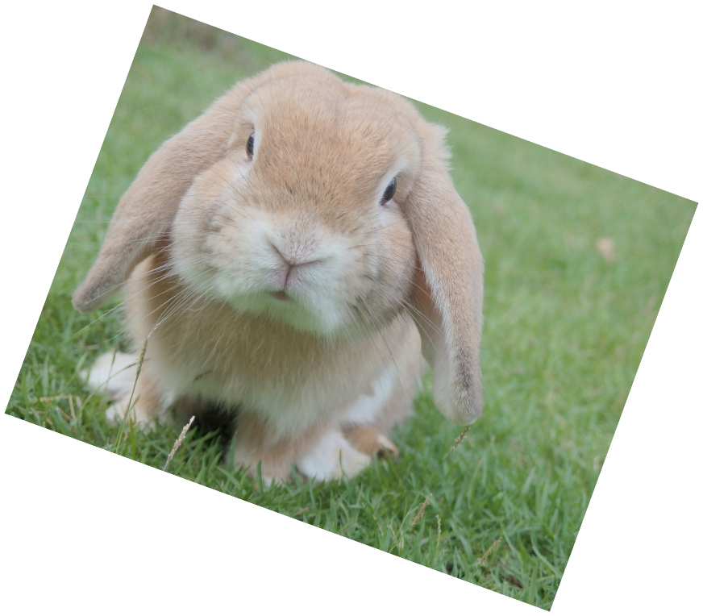
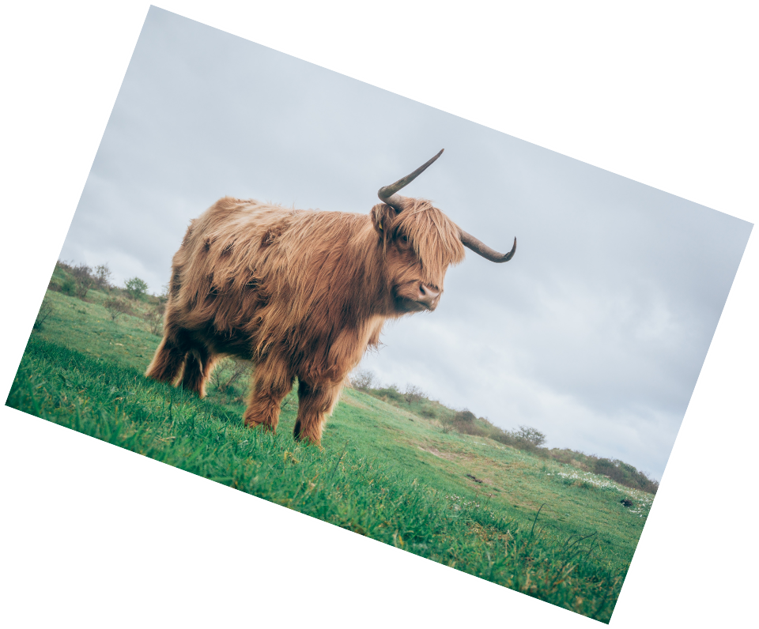

欣赏


这些小可爱有没有萌到你呀


白狐（学名：Alopex lagopus）别名蓝狐、北极狐，身长达50～75厘米，比一般狐小，尾长25～30厘米。白狐分布于北冰洋的沿岸地带及一些岛屿上的苔原地带，能在零下50℃的冰原上生活。喜欢在丘陵地带筑巢，而白狐的巢有几个出入口。白狐的食物包括旅鼠、鱼、鸟类与鸟蛋、浆果和北极兔，有时也会漫游海岸捕捉贝类.
荷兰垂耳兔据悉是由荷兰的Adrian De Cock先生发展出来的。在1949年，他以迷你兔（侏儒兔）与英国垂耳兔所生的后代，与法国垂耳兔交配，尝试生产缩小版的法国垂耳兔，因此它诞生的年代，比起法国垂耳兔、英国垂耳兔晚了许多。一般所说的迷你兔，则是1970年代发展出来的，在1980年ARBA（Amerian Rabbit Breeder's Association）的展览会中，才获得公认的新品种。
白狐（学名：Alopex lagopus）别名蓝狐、北极狐，身长达50～75厘米，比一般狐小，尾长25～30厘米。白狐分布于北冰洋的沿岸地带及一些岛屿上的苔原地带，能在零下50℃的冰原上生活。喜欢在丘陵地带筑巢，而白狐的巢有几个出入口。白狐的食物包括旅鼠、鱼、鸟类与鸟蛋、浆果和北极兔，有时也会漫游海岸捕捉贝类.
荷兰垂耳兔据悉是由荷兰的Adrian De Cock先生发展出来的。在1949年，他以迷你兔（侏儒兔）与英国垂耳兔所生的后代，与法国垂耳兔交配，尝试生产缩小版的法国垂耳兔，因此它诞生的年代，比起法国垂耳兔、英国垂耳兔晚了许多。一般所说的迷你兔，则是1970年代发展出来的，在1980年ARBA（Amerian Rabbit Breeder's Association）的展览会中，才获得公认的新品种。